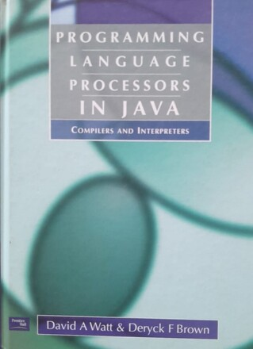

Sobre a Biblioteca
Bem-vindo à nossa Biblioteca Virtual! Aqui você encontrará uma vasta coleção de livros para todos os gostos. Nossa missão é promover o conhecimento e a leitura, proporcionando acesso fácil a uma grande variedade de títulos. Navegue pelas nossas categorias e descubra novos mundos!
Livros em Destaque
O sol é para todos
Narrado por Scout Finch, uma criança do sul dos Estados Unidos na década de 1930, o livro aborda o racismo...
Fundamentos Filosóficos da edução
José Antônio Vasconcelos explora a relação entre filosofia e educação, abordando correntes filosóficas como idealismo...
Chapadão do Bugre
Mário Palmério retrata a vida no sertão brasileiro...

Programming language processors in java
O livro ensina a criar compiladores e interpretadores em Java, abordando análise léxica...